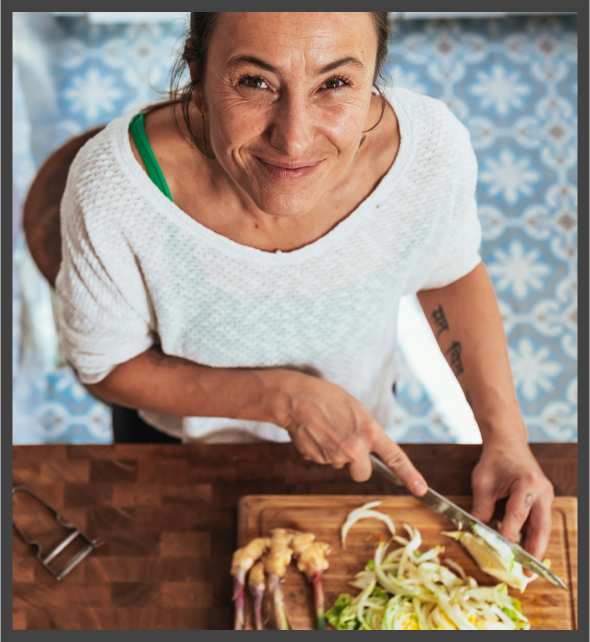

Grüne Genusswelt
Leidenschaftliche Verfechter einer gesunden und nachhaltigen Ernährung
Wir glauben fest daran, dass veganes Essen nicht nur gut für unseren Körper, sondern auch für unseren
Planeten ist. Unsere Mission ist es, Menschen zu inspirieren und zu unterstützen, köstliche vegane
Gerichte zu entdecken und in ihren Alltag zu integrieren.
Bei Grüne Genußwelt findest du eine vielfältige Auswahl an einfachen und kreativen veganen Rezepten, die
sowohl erfahrene Köche als auch Anfänger ansprechen. Von herzhaften Hauptgerichten über erfrischende
Salate bis hin zu verlockenden Desserts - unsere Rezepte sind voller Geschmack und Gesundheit.
Wir glauben, dass eine pflanzliche Ernährung nicht nur den Tieren, sondern auch der Umwelt zugutekommt.
Indem wir tierische Produkte durch köstliche pflanzliche Alternativen ersetzen, tragen wir dazu bei, den
ökologischen Fußabdruck zu verringern und eine nachhaltigere Zukunft für alle zu schaffen.
Abonniere unseren Newsletter
Jeden Tag ein neues Rezept in deiner Inbox. Lecker, nachhaltig und vielfältig.